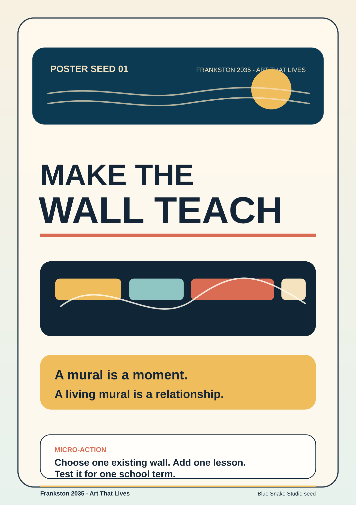
01 - Make The Wall Teach
A mural is a moment. A living mural is a relationship.
Print-ready working pack
Ten real A4 SVG source posters for Frankston 2035 - Art That Lives. Use them as printable meeting prompts, classroom wall pieces, library table handouts, or editable source files for future production.
Independent civic proposal by Blue Snake Studio. Not an official Frankston City Council website.
How to use
A4 SVG sources
These are not placeholders. They are the live poster files in assets/print-pack/poster-seeds, ready for local printing, editing, or export.

A mural is a moment. A living mural is a relationship.
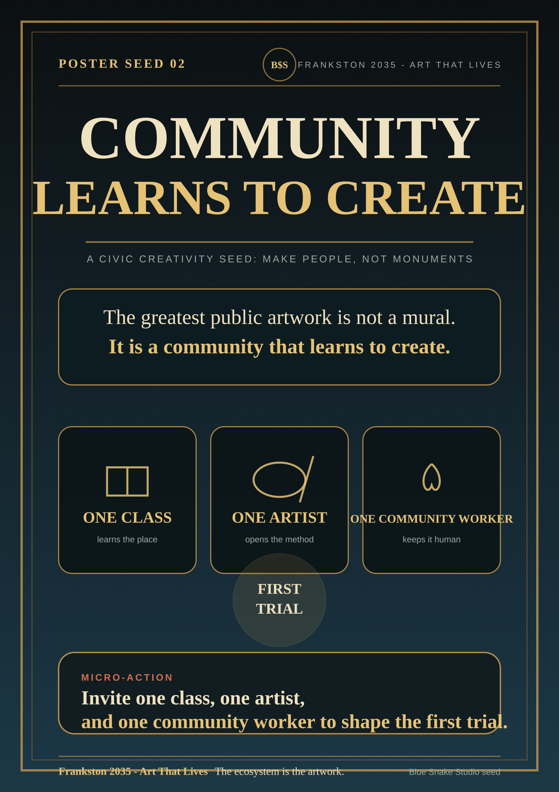
The greatest public artwork is not a mural. It is a community that learns to create.
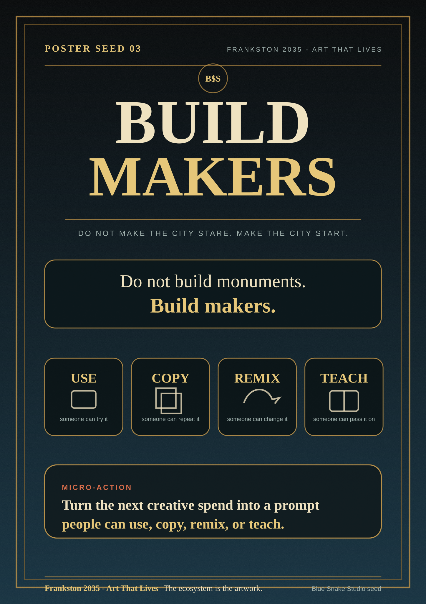
Do not build monuments. Build makers.
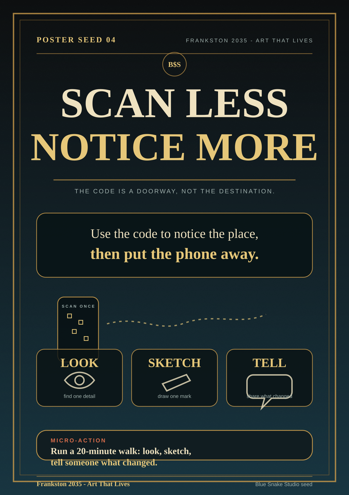
Use the code to notice the place, then put the phone away.
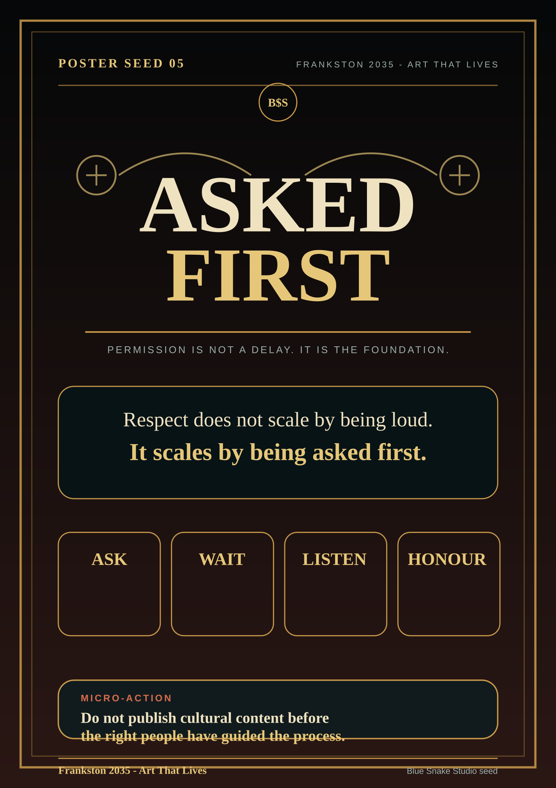
Respect does not scale by being loud. It scales by being asked first.
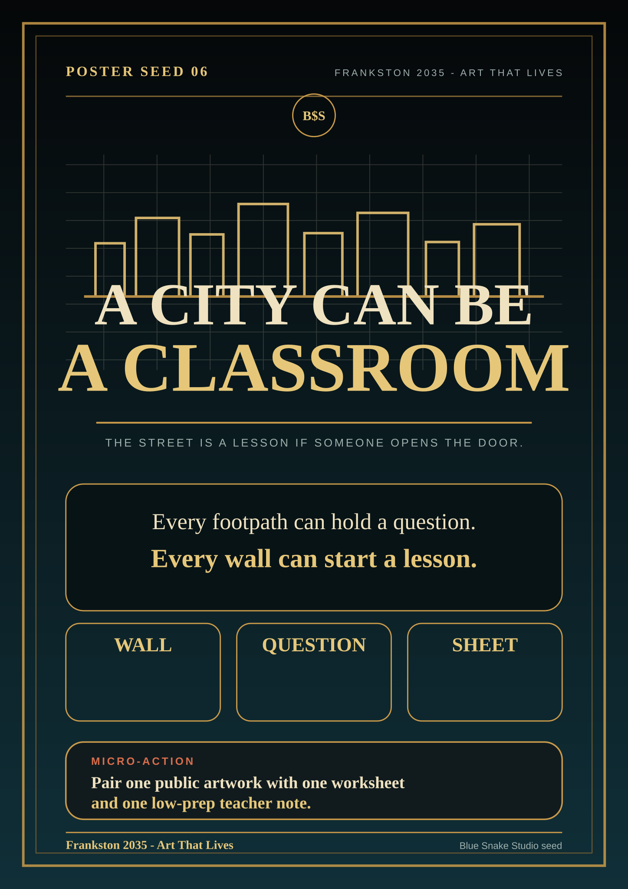
Every footpath can hold a question. Every wall can start a lesson.
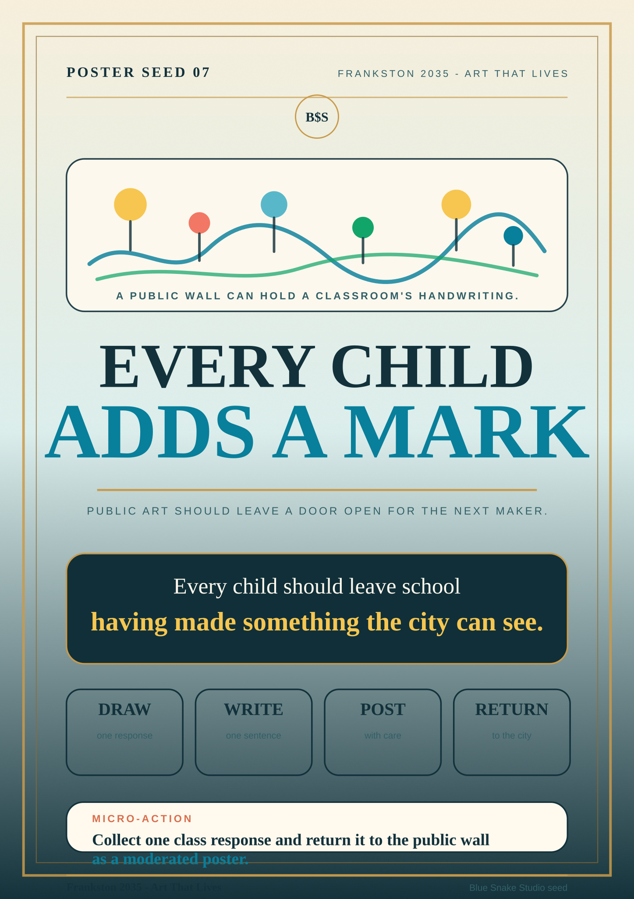
Every child should leave school having made something the city can see.
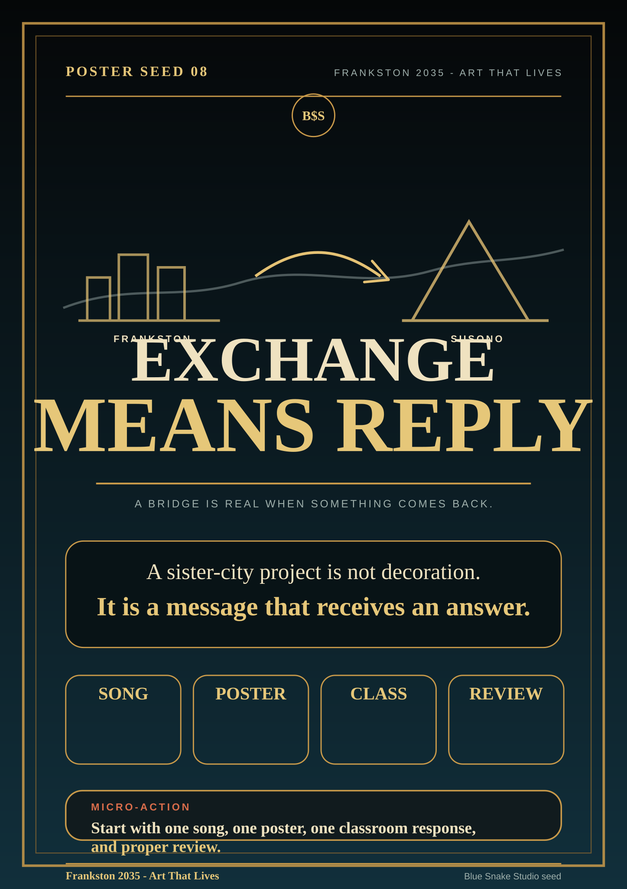
A sister-city project is not decoration. It is a message that receives an answer.
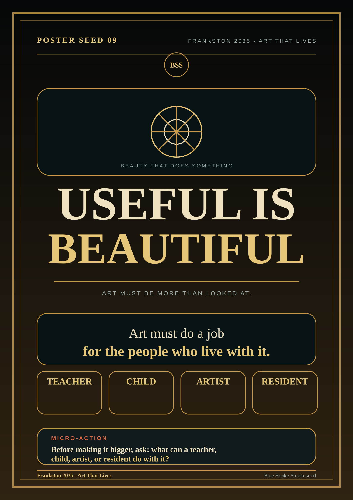
Art must do a job for the people who live with it.
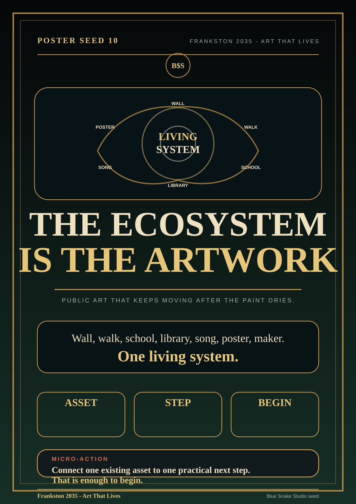
Wall, walk, school, library, song, poster, maker. One living system.
SVG identity pack
The logo/SVG pack contains editable vector lockups, PNG exports, social cards, favicons, colour tokens, and reference-only council logo images for comparison. The active public identity is the Frankston 2035 mark.
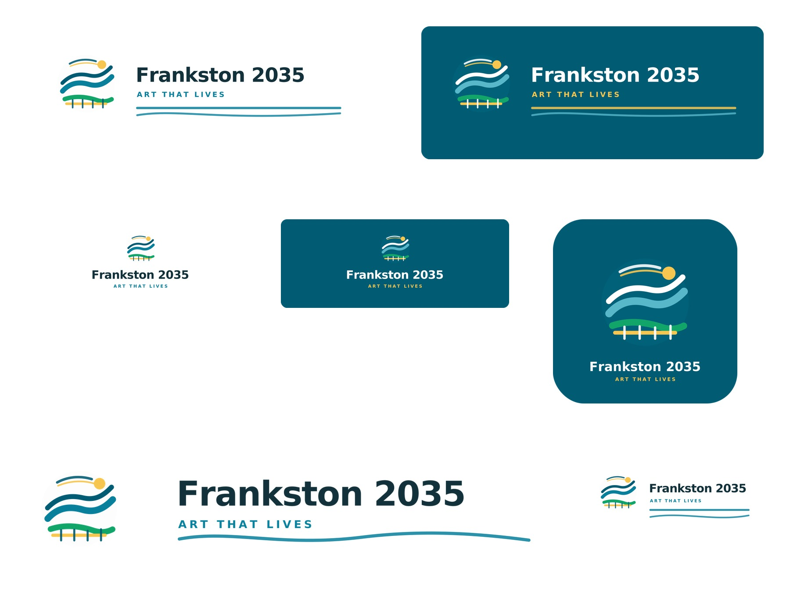
Frankston x Susono
Bilingual chorus poster. From the bay to Fuji; two shores, one crew.
Romaji + English chant cheat sheet for the Black Wing Crew chorus sequence.
Bilingual chorus poster built around the row/chant call-and-response.
Japanese-English lyric study poster with key words and pronunciation prompts.
Bilingual chorus poster for the row/flame/storm chant.
Classroom and community downloads
A single-page printable summary of the Frankston 2035 proposal. For meetings, noticeboards, and council briefing packs.
A 30-minute classroom activity: notice, make, share safely. Works for any year level with local adjustment.
Safe steps from classroom work to public display, including consent, moderation, and family communication.
Pre-flight review before any student work goes public: school policy, family consent, privacy, and image rights.
Layout template for print-and-apply QR trail cards. QR code boxes are blank until destination URLs are confirmed stable.
{kind=link}
{kind=link}
{kind=link}
{kind=link}
{kind=link}
{kind=link}
{kind=link}
{kind=link}
{kind=link}
{kind=link}
{kind=link}